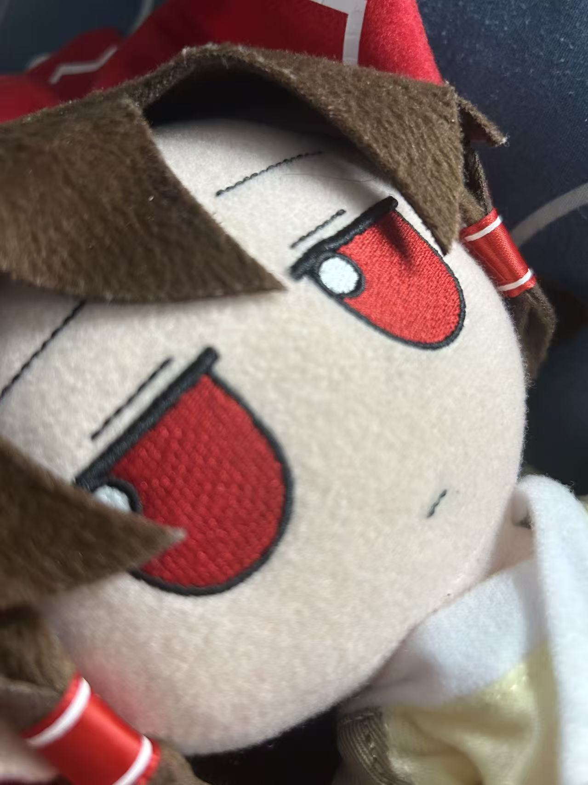
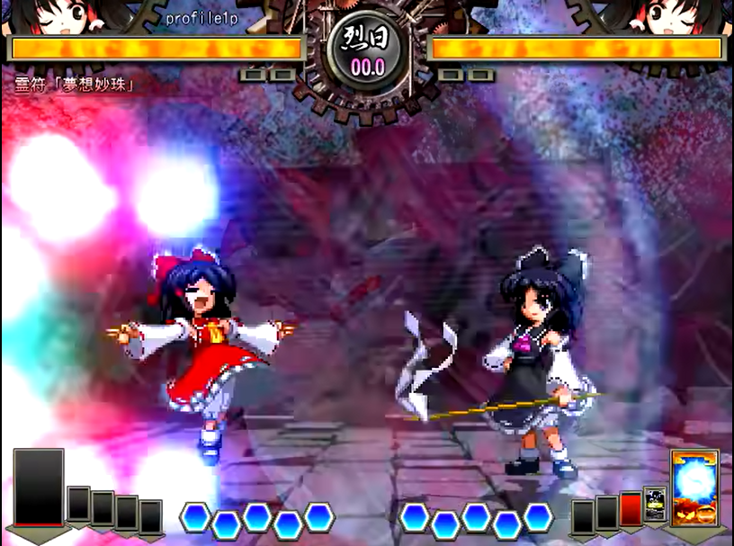

Reimu Hakurei (霊夢 博麗)
Shrine Maiden
Hakurei Shrine, Gensoukyou
Hello, I am Reimu Hakurei, the shrine maiden of the Hakurei Shrine in Gensoukyou. My duties include maintaining the balance between the human and youkai worlds, as well as resolving incidents that arise in this mystical land. I have a deep connection with the spiritual realm and possess unique abilities that aid me in my work... no more, unless you pay 500 yen.

Selected Spell Cards

霊符「夢想妙珠」
Highlight: Fires a stream of homing spiritual energy bullets that can easily hit moving targets. Simple and effective for both dueling and suppression.
東方非想天則 ~ 超弩級ギニョルの謎を追え, TH12.3(2009)
![[PUBLICATION COVER ALT]](assets/publication-placeholder.svg)
[PAPER TITLE]
Highlight:
[ONE SENTENCE DESCRIBING THE MAIN CONTRIBUTION.]
[JOURNAL NAME] [VOLUME], [PAGES] ([YEAR])
DOI: [DOI]
[KEYWORD 1]
[KEYWORD 2]
Projects
[PROJECT TITLE]
[项目中文名或副标题]
[项目中文名或副标题]
[PROJECT TYPE / FUNDING / AWARD]
[STATUS: In progress / Completed / Year]
[STATUS: In progress / Completed / Year]
[PROJECT TITLE]
[项目中文名或副标题]
[项目中文名或副标题]
[PROJECT TYPE / FUNDING / AWARD]
[STATUS: In progress / Completed / Year]
[STATUS: In progress / Completed / Year]
[PROJECT TITLE]
[项目中文名或副标题]
[项目中文名或副标题]
[PROJECT TYPE / FUNDING / AWARD]
[STATUS: In progress / Completed / Year]
[STATUS: In progress / Completed / Year]
Education & Experiences
Education
![[INSTITUTION LOGO ALT]](assets/institution-placeholder-ustc.png)
[START]–[END]
[INSTITUTION NAME],
[DEGREE / PROGRAM]
[DEGREE / PROGRAM]
![[INSTITUTION LOGO ALT]](assets/institution-placeholder-hsannu.png)
[START]–[END]
[INSTITUTION NAME],
[DEGREE / PROGRAM]
[DEGREE / PROGRAM]
Selected Awards
[YEAR.MONTH]--[AWARD NAME (DETAIL)]
[YEAR.MONTH]--[AWARD NAME (DETAIL)]
[YEAR.MONTH]--[AWARD NAME (DETAIL)]
[YEAR.MONTH]--[AWARD NAME (LINKED ANNOUNCEMENT)]
[YEAR.MONTH]--[AWARD NAME (DETAIL)]
See more awards
[YEAR.MONTH]--[EARLIER AWARD NAME (DETAIL)]
[YEAR.MONTH]--[EARLIER AWARD NAME (LINKED ANNOUNCEMENT)]
[YEAR]--[EARLIER AWARD NAME (DETAIL)]
Experiences
[START]-[END]--[ROLE, e.g. Teaching Assistant for COURSE]
[START]-[END]--[ROLE / INTERNSHIP / POSITION]
Posts & Notes
[NOTE CATEGORY TITLE]
[ONE LINE DESCRIBING THIS CATEGORY.]
See more [CATEGORY] notes
[NOTE CATEGORY TITLE]
[ONE LINE DESCRIBING THIS CATEGORY.]